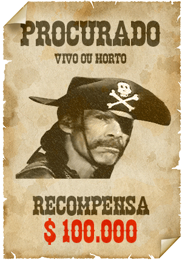
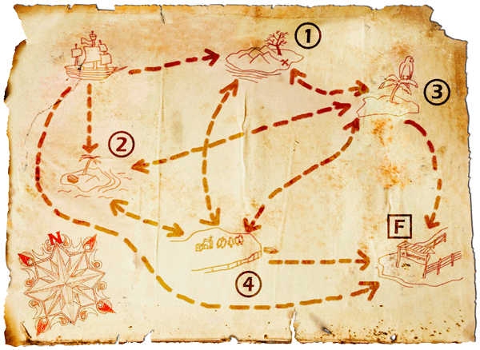

| Docente: | C. N. Campos |
| Monitores: | Vitor Yano |
| Davi Tozoni | |
| Celso Ruela |

Alma Negra é líder de um bando de piratas que não hesita em matar, seja quem for (inclusive seus subordinados), para conquistar ou esconder riquezas. O que Alma Negra não contava era com o incrível azar de ser capturado logo após ter roubado o mapa que continha a localização de todos os tesouros do seu arquiinimigo, o pirata João Pardal. Após 10 anos, cansado da prisão, principalmente pela péssima qualidade da comida servida no refeitório da prisão, conhecido como El Bandejòn, Alma Negra decide fugir da ilha em que estava preso.
Após escapar da prisão, utilizando apenas um tapa-olho e três penas de seu papagaio albino, com a ajuda de MacGyver, que era seu companheiro de cela, conseguiu roubar um navio para escapar da ilha. Seu objetivo agora é roubar os tesouros de João Pardal, que estão escondidos nas quatro ilhas do Arquipélago de Tangamandápio. O problema encontrado por Alma Negra e MacGyver é que o navio roubado pode não suportar todos os tesouros escondidos nas ilhas, de modo que os mesmos precisam decidir quais ilhas pilhar antes de seu destino final. Utilizando seu Hi-Phone MP15 (e não utilizando linhas da Tim ou Oi), Alma Negra ligou para a Unicamp e pediu sua ajuda para encontrar o caminho que eles poderiam tomar para conseguir o máximo de grana para gastar com muito Rum e muita farra em seu destino final, a Isla Siem Nombre, SEM AFUNDAR O NAVIO.
No mapa abaixo constam as quatro ilhas do Arquipélago de Tangamandápio, indicadas pelos números: 1, 2, 3, 4, além do destino final, a Isla Siem Nombre, representada pela letra F. A quantidade de tesouro (em kg) em cada ilha é fornecida como um número inteiro não-negativo.

Tarefa:
O objetivo do seu programa é determinar o caminho pelo qual Alma Negra e MacGyver devem passar para que acumulem o máximo possível de tesouros. É importante lembrar que o navio roubado pelos dois fugitivos possui um limite de carga que não pode ser ultrapassado. Além disso, leve em conta as seguintes considerações:
O programa deve ler cinco valores inteiros A, B, C e D, que representam, respectivamente, a quantidade de tesouro (em kg) existente em cada ilha 1, 2, 3 e 4 e o limite de carga do navio L (também em kg).
Seu programa deve imprimir:
Caso haja mais de um caminho com o máximo valor total acumulado de tesouros, o programa deve usar como critério de desempate a ordem numérica, ou seja, sempre dar preferência a invadir ilhas com números menores antes. Para as comparações, o valor da ilha final (F) deve ser considerado 0. Exemplos:
Exemplo de execução 1:
| 50 150 50 200 350 |
| Tesouro: 350 |
| Caminho: 2, 4, F. |
Exemplo de execução 2:
| 3105 2350 1640 320 3650 |
| Tesouro: 3425 |
| Caminho: 1, 4, F. |
| Notas: | Textos em azul designam dados de entrada, isto é, que devem ser lidos pelo seu programa. |
| Textos em preto designam dados de saída, ou seja, que devem ser impressos pelo seu programa. |
Observações gerais:
Critérios importantes: